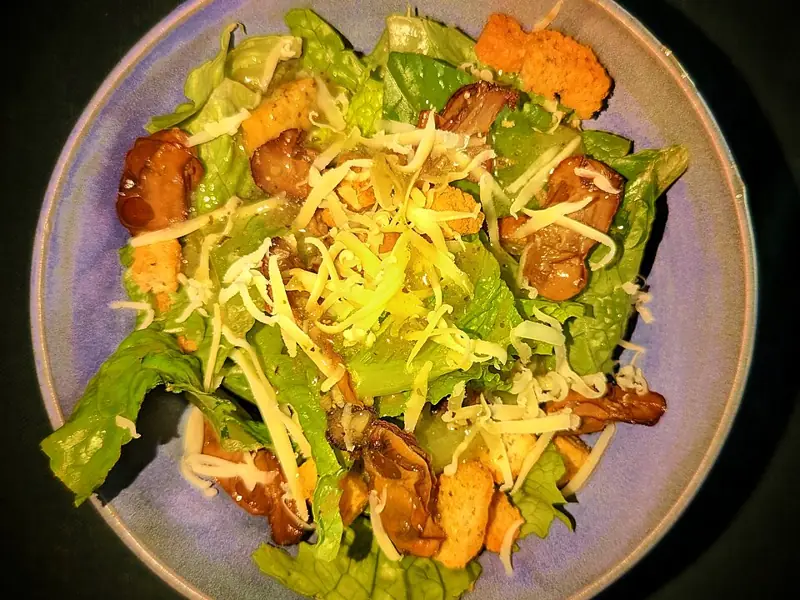

Фото: Daderot, CC0

Гренки из чёрствого хлеба с чесноком
Хрустящие чесночные гренки к супу или пиву из засохшего хлеба
15 мин4 порц.317 ккал на порциюБ 6 · Ж 15 · У 38Русская кухня
Продукты на 4 порц.
- Чёрствый хлеб10 шт
- Чеснок3 зуб.
- Растительное масло3 ст. л.
- Соль2 щеп.
- Укроп по желаниюпо вкусу
Как готовить
- Хлеб нарежьте брусочками или кубиками толщиной 1-1,5 см.
- Чеснок мелко порубите или выдавите и смешайте с маслом и солью.
- Разогрейте сковороду на среднем огне, выложите хлеб в один слой и сбрызните чесночным маслом, перемешайте.
- Обжаривайте 5-7 минут, часто помешивая, пока гренки не станут золотистыми и хрустящими со всех сторон.
- Посыпьте рубленым укропом и остудите на тарелке, на остывании они станут ещё хрустящее.
Совет. Чеснок легко сгорает и горчит: если жарите дольше, добавьте его за 2 минуты до конца. Остывшие гренки храните в сухой банке до 5 дней.